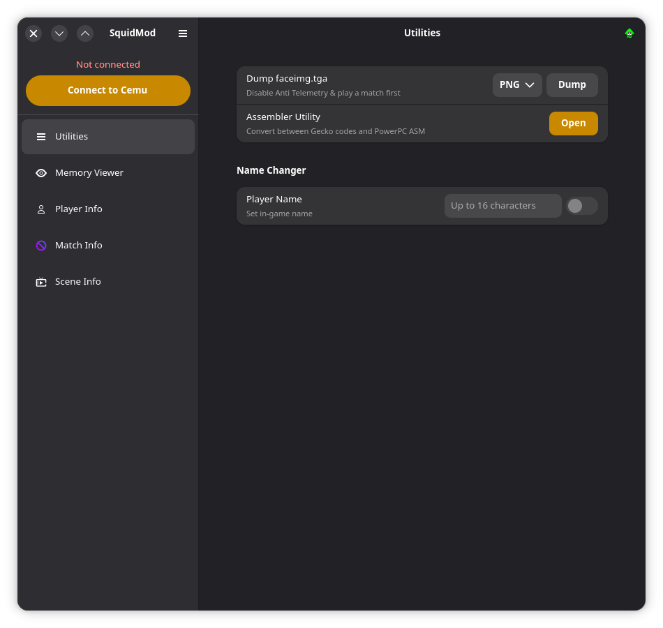
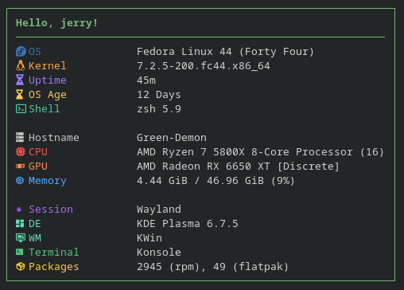

A 25-year-old developer from Germany messing around with computers and compilers.
Some may wonder what's up with the SM64 in my name. When I decided to go by just Jerry, I needed something to add since using Jerry as a username is basically impossible. Since I was into Super Mario 64 Modding and Speedrunning at the time, I just decided to add it and never changed it.
My journey evolved from gaming into a deep fascination with how software works under the hood.
Today, I build specialized tools like SquidMod (a PID Grabber and modding tool for the original Splatoon).
I spend most of my time writing in Rust. Why Rust? I just like the language.
Fun Fact: The background effects on this site were written in Rust, too. That's why you see a WebAssembly module if you decide to check this site's sources in the Developer Tools.

A modding tool for the original Splatoon written in Rust with the GTK4 + libadwaita toolkit.
Built primarily for the Cemu emulator, it equips users with a memory viewer, a face image dumper, and a PID Grabber for the Pretendo Network and SPFN.
It also features experimental support for connecting directly to real Wii U hardware.

A fetch utility written in Rust.
Originally made to learn, but has since replaced Fastfetch for me.
Workstation
CPUSystem
OS